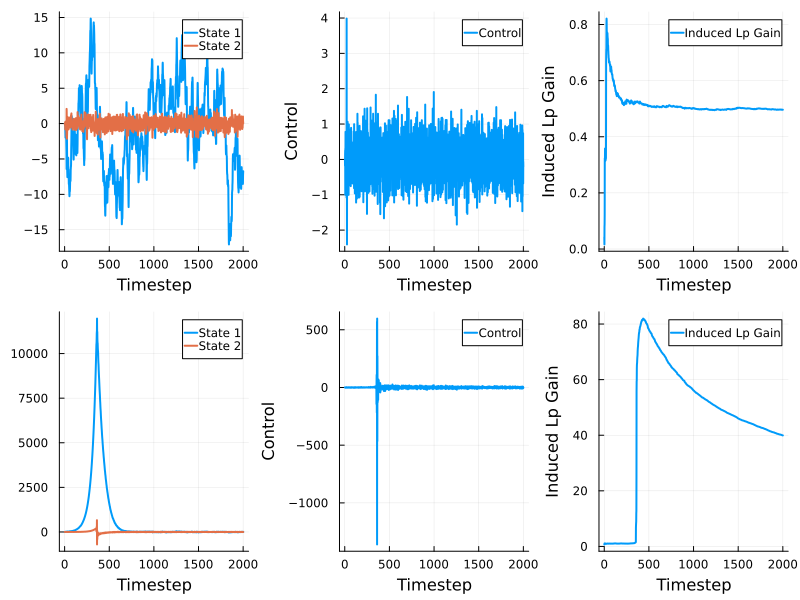
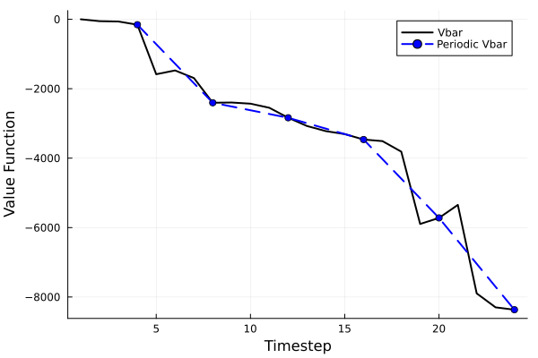

Output feedback with approximate pole cancellation
This example compares the minimax adaptive controller to the self-tuning LQG controller.
Introduction
The minimum phase system, $G_\text{mp}$, and the nonminimum-phase system, $G_\text{nmp}$, have state-space realizations $(A, B, C_\text{mp}, D, G)$ and $(A, B, C_\text{nmp}, D, G)$ respectively, where
\[ \begin{aligned} A & = \begin{bmatrix}1 & 1\\ 0 & 1\end{bmatrix}, & B & = \begin{bmatrix}0 \\ 1\end{bmatrix}, \\ C_\text{mp} & = \begin{bmatrix}-1/z_0 + z_0 \\ z_0\end{bmatrix}^\top, & C_\text{nmp} & = \begin{bmatrix}-z_0 + 1/z_0 \\ 1/z_0\end{bmatrix}^\top. \end{aligned}\]
Here $z_0 = 1.01$, $G = I / 100$ and $D = 1/10$. The goal is to synthesize a controller $\mu$ that, for as small a $\gamma > 0$ as possible, minimizes
\[\sup_{C, w, v, N} \sum_{t = 0}^N \left(|x_t|^2_Q + |u_t|^2_R - \gamma^2 |(w_t, v_t)|^2 \right),\]
where $Q = I$ and $R = I/100$.
Preliminaries
Load the packages
using MinimaxAdaptiveControl
using LinearAlgebra, Random
using JuMP
using Clarabel and define the optimizer_factory to be used throughout
optimizer_factory = () -> Clarabel.OptimizerController synthesis
Minimax Adaptive Controller
We first define the nominal models
a = 1.01
A = [1.0 1.0; 0.0 1.0]
B1 = [0.0 1.0]'
B2 = [0.0 1.0]'
C1 = [-a + 1/a 1/a]
C2 = [-1/a + a a]
D = fill(1.0,1,1) / 10
G = [1.0 0; 0 1.0] / 100
Q = [1.0 0; 0 1.0] / 100
R = fill(1.0,1,1) / 100
γ = 20.0
sys1 = OFLinMod(A, B1, G, C1, D, Q, R)
sys2 = OFLinMod(A, B2, G, C2, D, Q, R)
sys = [sys1, sys2]We next reduce the system to principal form using reduceSys
models = [Model(optimizer_factory()), Model(optimizer_factory())]
(A, B, G, Ks, Hs) = reduceSys(sys, γ, models)and check the termination statuses as a first test that $\gamma$ is not too small.
julia> termination_status.(models)
2-element Vector{MathOptInterface.TerminationStatusCode}:
OPTIMAL::TerminationStatusCode = 1
OPTIMAL::TerminationStatusCode = 1Next, we solve the periodic bellman inequalities with a period $\tau = 4$
model = Model(optimizer_factory())
set_silent(model)
period = 4
Ps0, Psplus= MACLMIs(A, B, G, Ks, Hs, period, model)and verify that $\gamma$ is a valid upper bound
julia> termination_status(model)
OPTIMAL::TerminationStatusCode = 1Next we synthesize the selection rule using getPeriodicSelectionRule and the controller using MAController
N = length(Hs) # = 2
selectionRule = getPeriodicSelectionRule(period)
mac = MAController(zeros(4), A, B, G, Ks, Hs, zeros(N), selectionRule)Self-tuning regulator: certainty equivalence LQG
We will construct a SelfTuningLQG object with randomized initial estimates:
A0 = randn(2, 2)
B0 = randn(2, 1)
C0 = randn(1, 2)
K0 = randn(2, 1)
S0 = Matrix{Float64}(I(2))
L0 = zeros(1, 2)
Q0 = Matrix{Float64}(I(2))
ρ0 = 1.0
xhat0 = randn(2)
nu = 2
str = SelfTuningLQG(A0, K0, C0, B0, xhat0, 0.0, 1.0, nu)Simulation
We will simulate for
Tdur = 2000steps. We define two equivalent simulation models as OFPlant objects:
Asim = [1.0 1.0; 0.0 1.0]
Bsim = [0.0 1.0]'
Csim = [-a + 1/a 1/a]
Dsim = fill(1.0,1,1) / 10
Gsim = [1.0 0; 0 1.0] / 100
Qsim = [1.0 0; 0 1.0] / 100
Rsim = fill(1.0,1,1) / 100
plantMAC= OFPlant(Asim, Bsim, Gsim, Csim, Dsim, zeros(2))
plantSTR = OFPlant(Asim, Bsim, Gsim, Csim, Dsim, zeros(2))Both simulations will be affected by the same process and measurement noise
processDisturbances = randn(Tdur, 2)
measurementDisturbances = randn(Tdur, 1)Next we construct matrices to store the state, input, output and metric trajectories
statesMAC = zeros(Tdur + 1, 2)
statesSTR = zeros(Tdur + 1, 2)
outputsMAC = zeros(Tdur + 1, 1)
outputsSTR = zeros(Tdur + 1, 1)
controlsMAC = zeros(Tdur, 1)
controlsSTR = zeros(Tdur, 1)
vfunMAC = getValueFunction(mac, Ps0, N)
dcMAC = InducedlpGain(0.0, 0.0, 0.0, 2)
dcSTR = InducedlpGain(0.0, 0.0, 0.0, 2)
metricsMAC = [vfunMAC, dcMAC]
metricsSTR = [dcSTR]
metricResultsMAC = zeros(Tdur + 1, length(metricsMAC))
metricResultsSTR = zeros(Tdur + 1, length(metricsSTR))Finally we run the simulations
simulate!(statesMAC, outputsMAC, controlsMAC, processDisturbances, measurementDisturbances, metricResultsMAC, metricsMAC, plantMAC, mac, Tdur)
simulate!(statesSTR, outputsSTR, controlsSTR, processDisturbances, measurementDisturbances, metricResultsSTR, metricsSTR, plantSTR, str, Tdur)and plot the results
plt = plot(layout = (2, 3), size = (800, 600))
plot!(plt[1], statesMAC, xlabel = "Timestep", label = ["State 1" "State 2"], linewidth = 2, legend = :topright)
plot!(plt[2], controlsMAC, xlabel = "Timestep", ylabel = "Control", label = "Control", linewidth = 2)
plot!(plt[3], metricResultsMAC[1:end-1, 2], xlabel = "Timestep", ylabel = "Induced Lp Gain", label = "Induced Lp Gain", linewidth = 2)
plot!(plt[4], statesSTR, xlabel = "Timestep", label = ["State 1" "State 2"], linewidth = 2)
plot!(plt[5], controlsSTR, xlabel = "Timestep", ylabel = "Control", label = "Control", linewidth = 2)
plot!(plt[6], metricResultsSTR[1:end-1, 1], xlabel = "Timestep", ylabel = "Induced Lp Gain", label = "Induced Lp Gain", linewidth = 2)
We also plot the valubound and highlight that it's periodically nonincreasing
plot(1:numPeriods*period, metricResultsMAC[1:numPeriods*period, 1], linestyle = :solid, linewidth = 2, color = :black, label = "Vbar")
plot!(inds[1:numPeriods], metricResultsMAC[inds[1:numPeriods], 1], xlabel = "Timestep", ylabel = "Value Function", label = "Periodic Vbar", linewidth = 2, linestyle = :dash, color = :blue, marker = :circle)